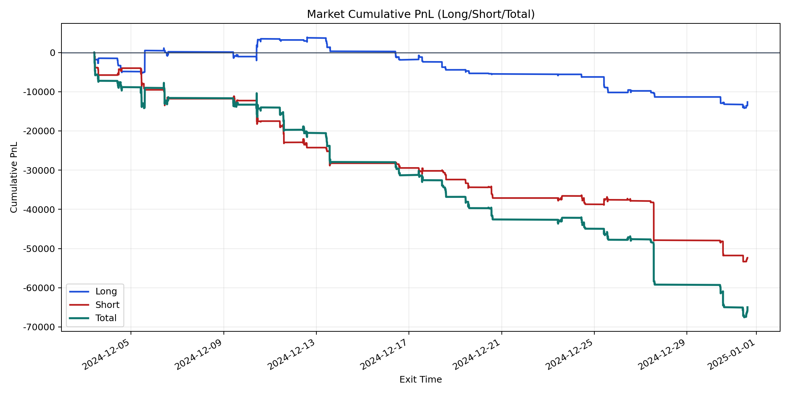
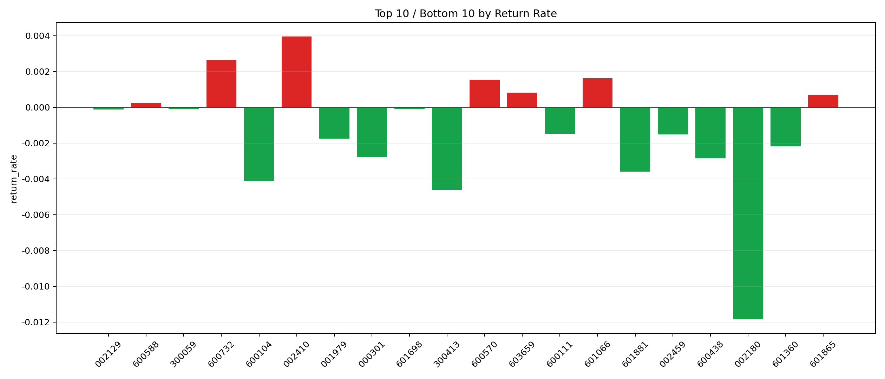

| repo_root | /home/haoranyou/data/output/dynamic_AUM_TAKER |
|---|---|
| period_months | 1 |
| period_label | 2024-12-03_to_2024-12-31 |
| start_time | 2024-12-03 09:51:52 |
| end_time | 2024-12-31 14:36:42 |
| n_trades | 3755 |
| n_symbols | 31 |
| total_pnl | -64971.83415000045 |
| long_total_pnl | -12618.236699999617 |
| short_total_pnl | -52353.59745000082 |
| total_entry_notional | 69434219.0 |
| long_entry_notional | 25214155.0 |
| short_entry_notional | 44220064.0 |
| total_return_rate | -0.000935732194957078 |
| long_return_rate | -0.0005004425767986124 |
| short_return_rate | -0.00118393309991593 |
| top_symbols_by_return | ["002410", "600732", "601066", "600570", "603659", "601865", "600588", "601698", "300059", "002129"] |
| bottom_symbols_by_return | ["002180", "300413", "600104", "601881", "600438", "000301", "601360", "001979", "002459", "600111"] |

